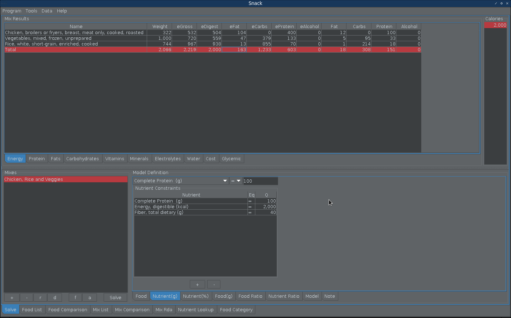
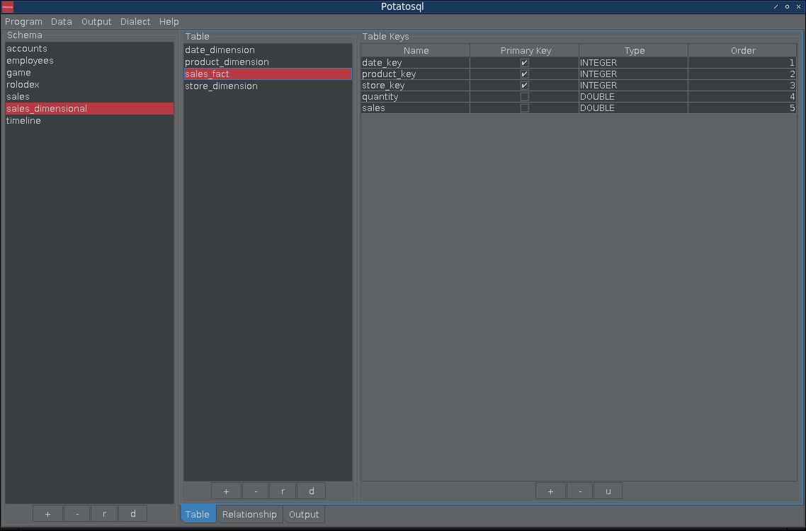

| Stable Release: | June 08, 2022 |
| Repository: | https://github.com/xjrga/snack |
| Wiki: | https://github.com/xjrga/snack/wiki |
| Written in: | java |
| Type: | nutrition |
| License: | gpl2 |
| Download: | https://xjrga.github.io/releases/snack-850-app.zip |
| Signature: | https://xjrga.github.io/releases/snack-850-app.zip.asc |

| Stable Release: | May 06, 2022 |
| Repository: | https://github.com/xjrga/potatosql |
| Wiki: | https://github.com/xjrga/potatosql/wiki |
| Written in: | java |
| Type: | database design |
| License: | gpl2 |
| Download: | https://xjrga.github.io/releases/potatosql-60-app.zip |
| Signature: | https://xjrga.github.io/releases/potatosql-60-app.zip.asc |
| Stable Release: | January 28, 2022 |
| Repository: | https://github.com/xjrga/looks |
| Wiki: | https://github.com/xjrga/looks/wiki |
| Written in: | java |
| Type: | java metal themes |
| License: | gpl2 |
| Download: | https://s01.oss.sonatype.org/content/repositories/public/io/github/xjrga/looks/02/looks-02.jar |
| Signature: | https://s01.oss.sonatype.org/content/repositories/public/io/github/xjrga/looks/02/looks-02.jar.asc |

| Stable Release: | January 30, 2022 |
| Repository: | https://github.com/xjrga/looks |
| Wiki: | https://github.com/xjrga/looks/wiki |
| Written in: | java |
| Type: | color picker and eyedropper |
| License: | gpl2 |
| Download: | https://xjrga.github.io/releases/colorscheme-02-app.zip |
| Signature: | https://xjrga.github.io/releases/colorscheme-02-app.zip.asc |